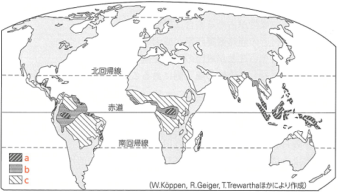
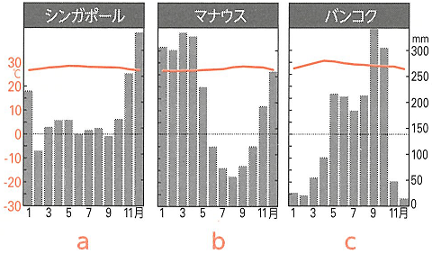
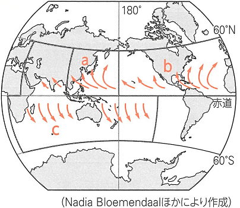

| 番号 | 問題 | 解答 |
|---|---|---|
| 1 | 年中気温が高く、熱帯収束帯の影響を受けるため雨の多い気候を何というか。 | 熱帯気候(A) |
| 2 | ケッペンの気候区分において熱帯と判定される最寒月の平均気温の条件は何℃以上か。 | 18℃ |
| 3 | 熱帯に分布する鉄分やアルミニウム分を多く含んだ赤色の酸性土壌を何というか。 | ラトソル |
| 4 | 高温多湿な熱帯に広がる、高木を含む様々な樹木が密生している樹林を何というか。 | 熱帯雨林(多雨林) |
| 5 | 熱帯にみられる潮の満ち引きがある海岸地域に広がる耐塩性のある樹木の総称を何というか。 | マングローブ |
| 6 | 赤道周辺の地域で午後から夕方にかけておこる強風をともなう対流性降雨を何というか。 | スコール |
| 7 | 熱帯で主食として食されるイモ類を何というか。２つ答えよ。 | タロイモ・キャッサバ |
| 8 | 海面水温が高い低緯度の海上で発生し、中緯度へ移動しながら発達する気圧の総称を何というか。 | 熱帯低気圧 |
| 9 | インド洋で発生する8の南アジアやアフリカでの名称は何か。 | サイクロン |
| 10 | カリブ海で発生する8のメキシコ湾周辺諸国での名称は何か。 | ハリケーン |
| 11 | フィリピン海沖で発生する8の東南アジアや東アジアでの名称は何か。 | 台風 |
| 12 | 熱帯でみられる、森林を焼きその灰を肥料にして作物を栽培する農業を何というか。 | 焼畑農業 |
| 13 | 熱帯・亜熱帯の気候をいかし、世界市場向けの商品作物を大規模に栽培する農園を何というか。 | プランテーション |
| 14 | ケッペンの気候区分でAmと表記される気候がアジア地域でつくられる要因になっている風を何というか。 | 季節風(モンスーン) |
| 15 | ケッペンの気候区分でAwと表記される気候の名称ともなっている長草と乾燥に強い疎林からなる植生を何というか。 | サバナ |
| 16 | Aw気候の乾季を生み出す要因になっている気圧帯を何というか。 | 亜熱帯(中緯度)高圧帯 |
| 17 | 15は、ベネズエラのオリノコ川流域では何と呼ばれているか | リャノ |
| 18 | 15は、ブラジル高原では何と呼ばれているか。 | セラード |
| 19 | 15が一部みられるパラグアイ西部からアルゼンチンにかけて広がる平原を何というか。 | グランチャコ |
| 20 | Aw気候ではやせた土壌が多いが、ブラジル高原やインドのデカン高原では肥沃な土壌が広がる。この土壌をそれぞれ何というか。 | テラローシャ・レグール |


